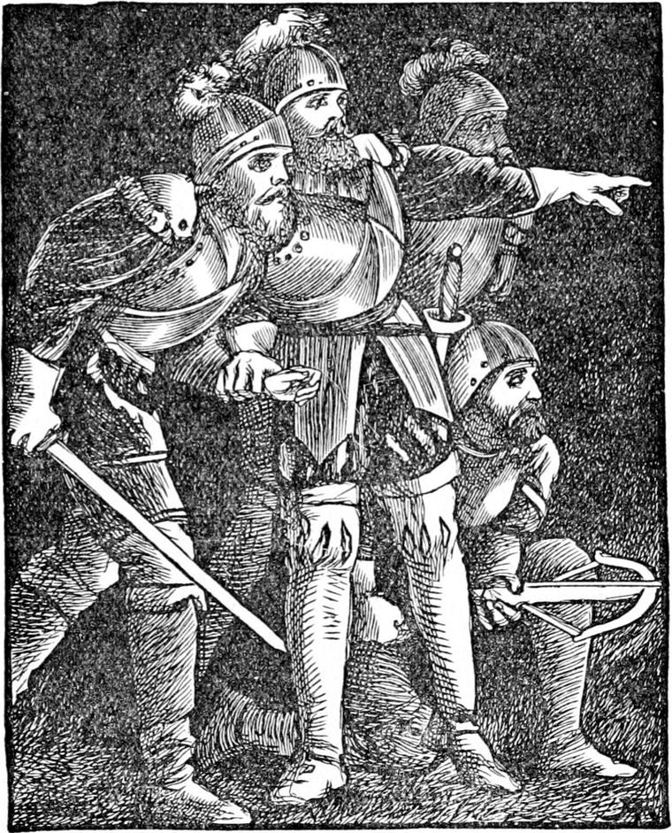
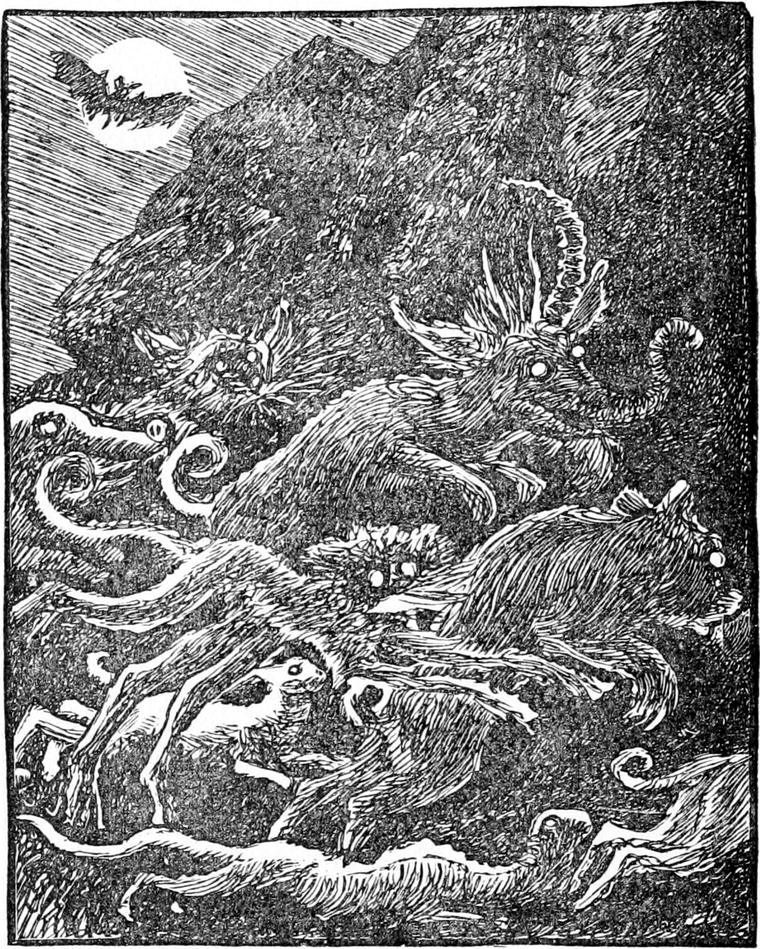

About this time the gentlemen whom the king had left behind him to watch over the princess had each occasion to doubt the testimony of his own eyes, for more than strange were the objects to which they would bear witness. They were of one sort—creatures—but so grotesque and misshapen as to be more like a child's drawings upon his slate than anything natural. They saw them only at night, while on guard about the house. The testimony of the man who first reported having seen one of them was that, as he was walking slowly round the house, while yet in the shadow, he caught sight of a creature standing on its hind legs in the moonlight, with its forefeet upon a window-ledge, staring in at the window. Its body might have been that of a dog or wolf, he thought, but he declared on his honour that its head was twice the size it ought to have been for the size of its body, and as round as a ball, while the face, which it turned upon him as it fled, was more like one carved by a boy upon the turnip inside which he is going to put a candle than anything else he could think of. It rushed into the garden. He sent an arrow after it, and thought he must have struck it; for it gave an unearthly howl, and he could not find his arrow any more than the beast, although he searched all about the place where it vanished. They laughed at him until he was driven to hold his tongue, and said he must have taken too long a pull at the ale-jug.
But before two nights were over he had one to side with him, for he, too, had seen something strange, only quite different from that reported by the other. The description the second man gave of the creature he had seen was yet more grotesque and unlikely. They were both laughed at by the rest; but night after night another came over to their side, until at last there was only one left to laugh at all his companions. Two nights more passed, and he saw nothing; but on the third he came rushing from the garden to the other two before the house, in such an agitation that they declared—for it was their turn now—that the band of his helmet was cracking under his chin with the rising of his hair inside it. Running with him into that part of the garden which I have already described, they saw a score of creatures, to not one of which they could give a name, and not one of which was like another, hideous and ludicrous at once, gambolling on the lawn in the moonlight. The supernatural or rather subnatural ugliness of their faces, the length of legs and necks in some, the apparent absence of both or either in others, made the spectators, although in one consent as to what they saw, yet doubtful, as I have said, of the evidence of their own eyes—and ears as well; for the noises they made, although not loud, were as uncouth and varied as their forms, and could be described neither as grunts nor squeaks nor roars nor howls nor barks nor yells nor screams nor croaks nor hisses nor mews nor shrieks, but only as something like all of them mingled in one horrible dissonance. Keeping in the shade, the watchers had a few moments to recover themselves before the hideous assembly suspected their presence; but all at once, as if by common consent, they scampered off in the direction of a great rock, and vanished before the men had come to themselves sufficiently to think of following them.


My readers will suspect what these were; but I will now give them full information concerning them. They were, of course, household animals belonging to the goblins, whose ancestors had taken their ancestors many centuries before from the upper regions of light into the lower regions of darkness. The original stocks of these horrible creatures were very much the same as the animals now seen about farms and homes in the country, with the exception of a few of them, which had been wild creatures, such as foxes, and indeed wolves and small bears, which the goblins, from their proclivity towards the animal creation, had caught when cubs and tamed. But in the course of time all had undergone even greater changes than had passed upon their owners. They had altered—that is, their descendants had altered—into such creatures as I have not attempted to describe except in the vaguest manner—the various parts of their bodies assuming, in an apparently arbitrary and self-willed manner, the most abnormal developments. Indeed, so little did any distinct type predominate in some of the bewildering results, that you could only have guessed at any known animal as the original, and even then, what likeness remained would be more one of general expression than of definable conformation. But what increased the gruesomeness tenfold was that, from constant domestic, or indeed rather family association with the goblins, their countenances had grown in grotesque resemblance to the human.
No one understands animals who does not see that every one of them, even amongst the fishes, it may be with a dimness and vagueness infinitely remote, yet shadows the human: in the case of these the human resemblance had greatly increased: while their owners had sunk towards them, they had risen towards their owners. But the conditions of subterranean life being equally unnatural for both, while the goblins were worse, the creatures had not improved by the approximation, and its result would have appeared far more ludicrous than consoling to the warmest lover of animal nature. I shall now explain how it was that just then these animals began to show themselves about the king's country house.
The goblins, as Curdie had discovered, were mining on—at work both day and night, in divisions, urging the scheme after which he lay in wait. In the course of their tunnelling they had broken into the channel of a small stream, but the break being in the top of it, no water had escaped to interfere with their work. Some of the creatures, hovering as they often did about their masters, had found the hole, and had, with the curiosity which had grown to a passion from the restraints of their unnatural circumstances, proceeded to explore the channel. The stream was the same which ran out by the seat on which Irene and her king-papa had sat as I have told, and the goblin creatures found it jolly fun to get out for a romp on a smooth lawn such as they had never seen in all their poor miserable lives. But although they had partaken enough of the nature of their owners to delight in annoying and alarming any of the people whom they met on the mountain, they were, of course, incapable of designs of their own, or of intentionally furthering those of their masters.
For several nights after the men-at-arms were at length of one mind as to the fact of the visits of some horrible creatures, whether bodily or spectral they could not yet say, they watched with special attention that part of the garden where they had last seen them. Perhaps indeed they gave in consequence too little attention to the house. But the creatures were too cunning to be easily caught; nor were the watchers quick-eyed enough to descry the head, or the keen eyes in it, which, from the opening whence the stream issued, would watch them in turn, ready, the moment they should leave the lawn, to report the place clear.